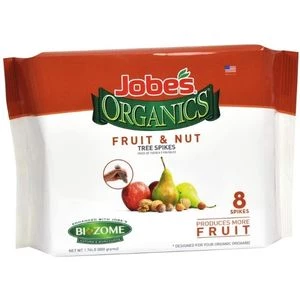
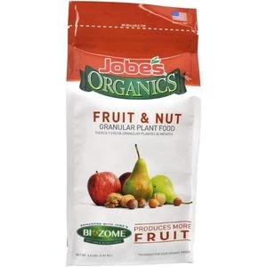
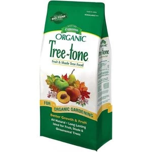
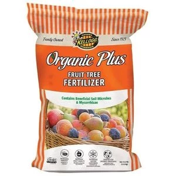
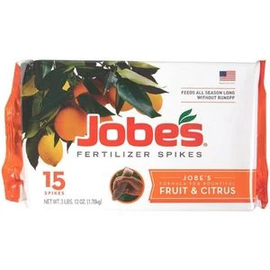
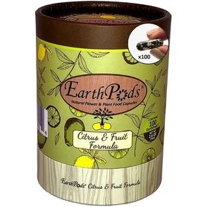
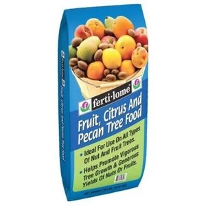

Fruit
All Fartilizer

Jobe’s Organics Fruit Fertilizer Spikes
NPK ratio of 8-2-2
Used in:All fruit

Jobe’s Organics Fruit & Nut Granular Fertilizer
NPK 3-5-5
Used in:all fruit

5. Espoma Organic Tree-Tone
NPK ratio of 6-2-3
used in: shade and full-sun fruit

Kellogg Garden Organics Fruit Tree
NPK 4-5-4
used in:berry bushes and citrus trees

7. Jobe’s Organics Fruit & Citrus Fertilizer
NPK ratio of 3-5-5
used in: container and ground-planted trees

10. Earth Pods Premium Fruit & Citrus Plant Food Spikes
npk:2-2-4
used in:Increased leaf and fruit production

11. Fertilome Nut & Fruit Tree Food